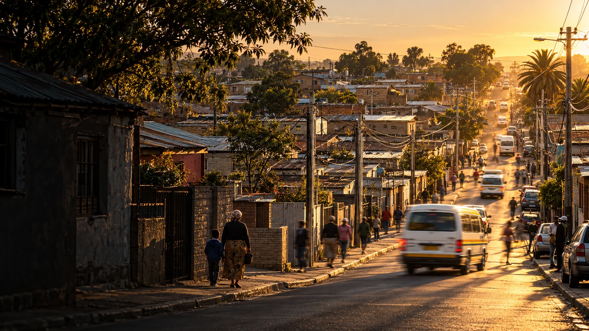
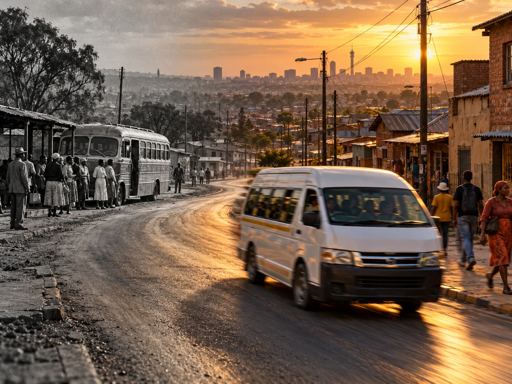

Beginnings
How a community took shape
Explore the origins of Alexandra, its settlement and the people who made it home.

Alexandra Digital History Archive
Welcome to Alexandra Digital History Archive — a digital museum celebrating Alexandra’s past and present through its people, places and community spirit. Step inside to explore stories of resilience, creativity and belonging, and discover the lives and memories that continue to shape its story.
AI-generated Alexandra-inspired street scene at golden hour,
with moving pedestrians and a taxi. (OpenAI, 2026;)
Based on a street photograph published by Sowetan. ( Sowetan, 2019)
01 / A living archive
Begin with a place, a person or a question. Discover the connections between Alexandra’s history and the community that continues to shape it.
This archive brings its past and present into conversation, making room for memory, creativity and everyday life.
Discover the purpose of the archive ↗
02 / Through time
Follow the questions that guide our historical exhibition, from Alexandra’s beginnings to the living community of today.
Explore the timeline ↗Beginnings
Explore the origins of Alexandra, its settlement and the people who made it home.
Memory
Discover the stories connecting streets, homes and community life across generations.
Today
Consider how everyday life, culture and aspirations continue the story.
03 / People & community
Behind every place are people: those whose names are widely known, and those whose daily contributions hold a community together.

Community stories
Discover the memories and connections at the heart of the archive.
Explore the people ↗
Historical collections
Photographs, documents and personal memories can open different windows onto the past.
Explore community voices ↗
04 / Places that hold memory
A street, a home, a familiar journey. Places connect personal memories to the wider life of Alexandra.
Explore the landmarks and map ↗05 / An open invitation
Memory belongs to the people who carry it. Share a possible story, ask a question or help us understand material connected to Alexandra.